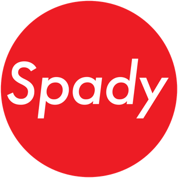
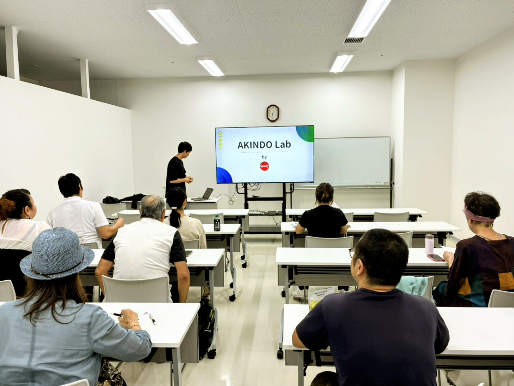
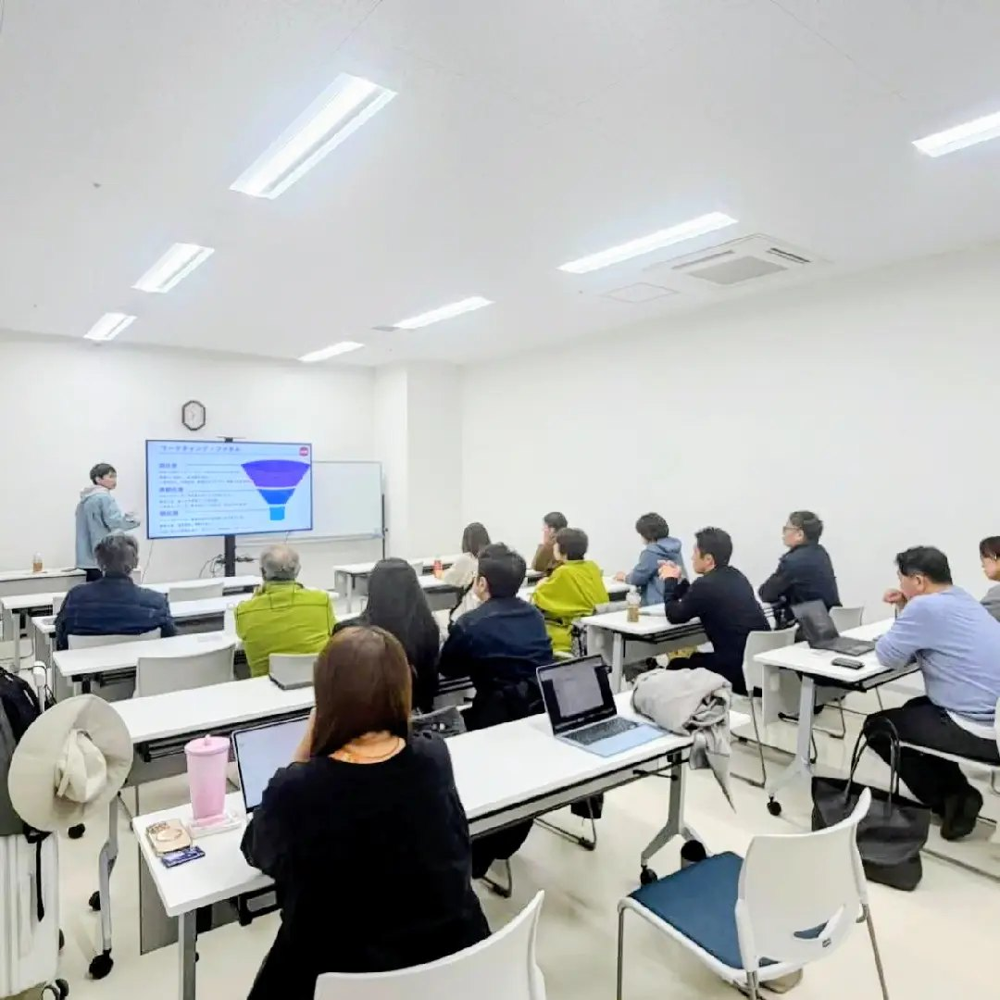
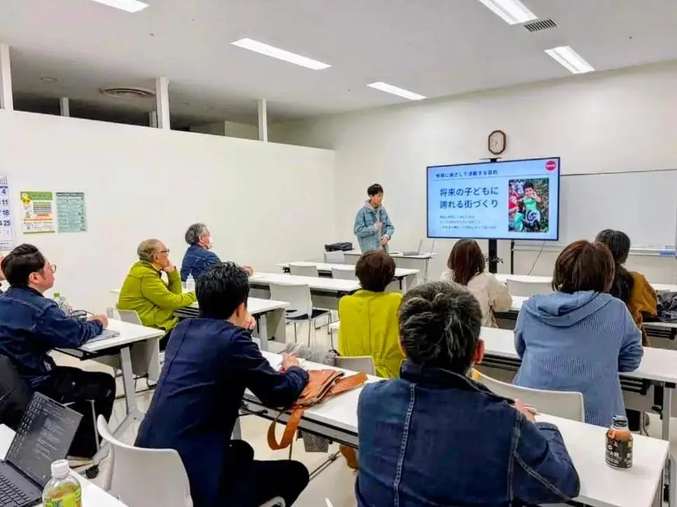
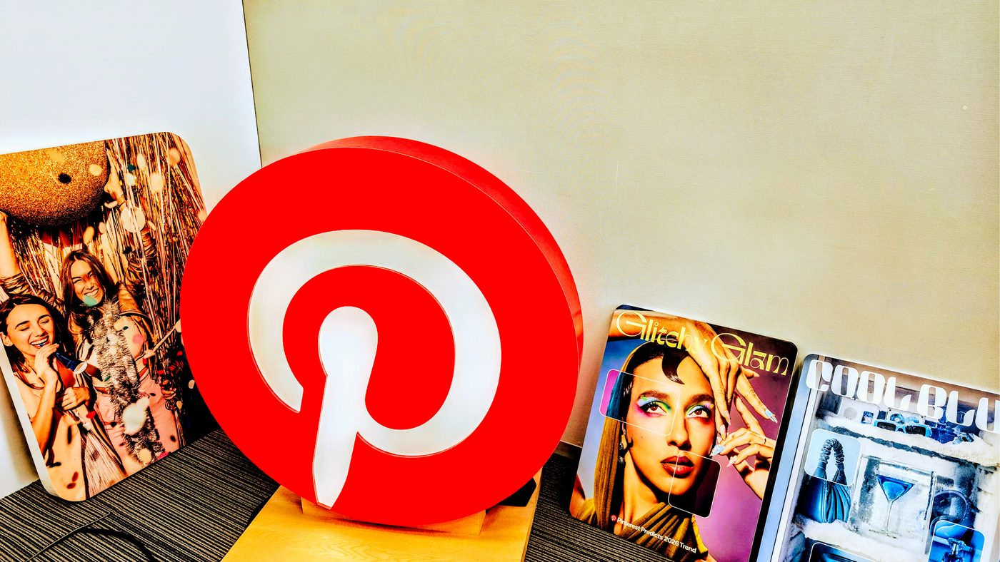
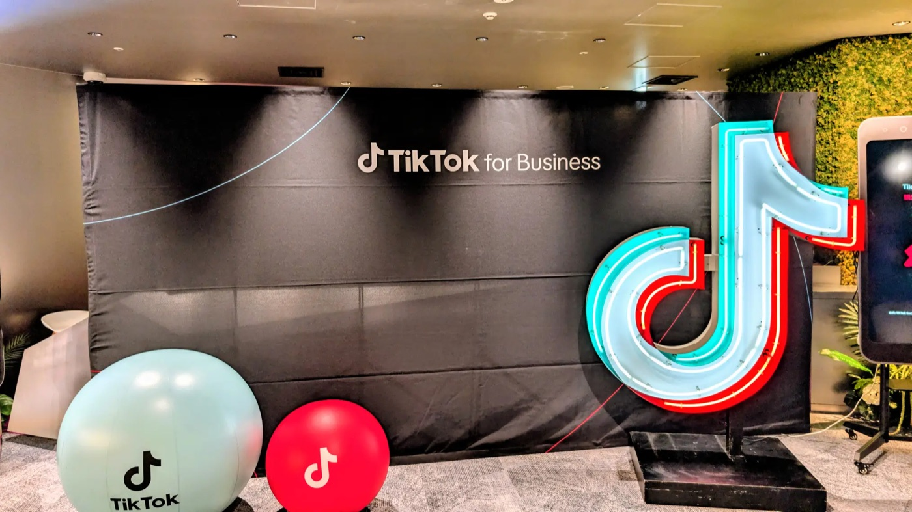
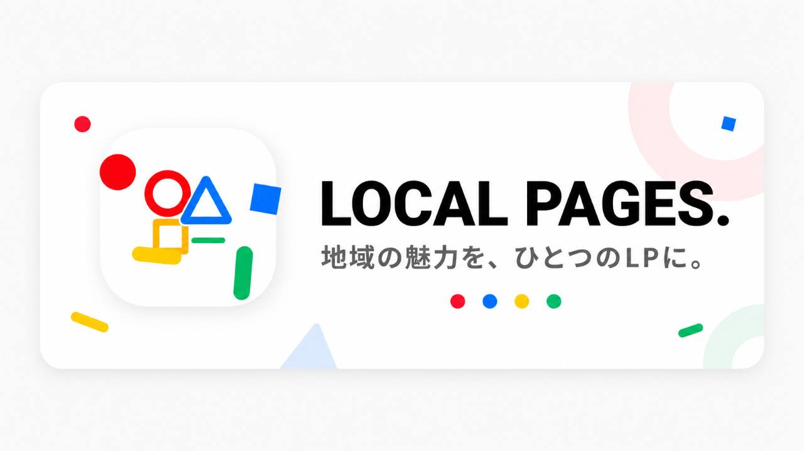

知ってもらう
お店の魅力を、届ける。
発信や広告を通じて、必要としている人に見つけてもらうために。

AKINDO Labby SpadyAKINDO Lab by Spady
小樽発・地域事業者のためのデジタル集客勉強会
SNS・LINE・広告・AIを日々の商いに活かし、
問い合わせ・予約・来店につなげる方法を、一緒に学びます。
LINE登録無料・次回の開催日とテーマをお届け
小樽・銭函から、地域の商いを支える学びを。
OTARU, HOKKAIDO01 ABOUT US
一人で悩んでいたことを、
顔を合わせて、一緒に考える。
AKINDO Labは、小樽・銭函のSpadyが主催する、地域事業者のためのデジタル集客勉強会です。
お店や会社によって、必要な取り組みは違います。ツールの操作方法だけでなく、自分の事業でどう活かすかを大切にしています。
Instagram、LINE、Google、広告、AI。必要なものをつなげながら、無理なく続けられる集客の流れを学びます。
初めての方にも伝わる言葉で、考え方と使い方を整理します。
地域のお店や中小企業の状況に近い例から、活かし方を考えます。
少人数だからこそ、わからないことを質問しながら学べます。
AKINDO LabはSpadyが独自に主催する勉強会です。小樽市が開催する「小樽商人塾」とは別の取り組みです。
02 WHAT WE LEARN
「何を使うか」の前に、
「何を実現したいか」から考えます。
知ってもらう
発信や広告を通じて、必要としている人に見つけてもらうために。
つながりを育てる
SNS、LINE、ホームページをつなぎ、問い合わせや予約へ進みやすい流れを。
無理なく続ける
発信や顧客対応を続けやすくするために、AIの具体的な活かし方を学びます。
開催回によってテーマや内容は変わります。最新の開催内容はLINEでご案内します。
03 LEARNING TOGETHER
少人数で、質問しやすい距離感。
参加される方の状況に近い例を交えながら、一緒に考えていきます。



テーマごとに席数を限定して開催しています。
開催テーマを見る04 FOR YOUR BUSINESS
今のお困りごとが、学びの出発点です。
当てはまる項目を選んでみてください。
LINE登録後、トークでご相談いただけます。
05 FACILITATOR
前職ではMeta社に出向し、マーケティングプロとして広告主様・広告代理店様の広告運用をサポートしてきました。
現在は小樽・銭函を拠点に、Meta広告、Instagram、LINE公式アカウントを活用した集客導線づくりを支援しています。
地域のお店や中小企業が、デジタルを無理なく活かせるように。広告やSNSの現場で得た経験を、日々の商いに取り入れやすい形でお伝えします。
地域のお店や中小企業には、まだ十分に伝わっていない魅力がたくさんあります。
良い商品やサービスがあっても、Instagram、LINE、Google検索、広告、ホームページの流れがつながっていないことで、問い合わせや予約、来店につながらないケースも少なくありません。
前職ではMeta社に出向し、広告主様や広告代理店様のマーケティング支援に携わってきました。
その中で感じたのは、広告やSNS、デジタル活用に関する情報には大きな格差があるということです。
都市部の企業や広告代理店には新しい情報やノウハウが届きやすい一方で、地域のお店や中小企業には、本来使えるはずの選択肢が十分に届いていないこともあります。
人口が減っていく地域では、今までと同じやり方だけで新しいお客様に出会うことが難しくなっていきます。
だからこそ、Instagram、LINE、Google、広告、AI、ホームページをバラバラにせず、必要な人に見つけてもらい、問い合わせ・予約・来店につながる流れを整えることが大切だと考えています。
AKINDO Lab by Spadyでは、流行りのツールを紹介するだけではなく、地域のお店や中小企業が実際に使える形に落とし込むことを大切にしています。
小樽発の学びの場として、地域の商いを支えるような活動にしていきたいと考えています。


広告・SNS・テクノロジーの現場に触れてきた記録
06 PROGRAM
興味のあるテーマから、ご参加いただけます。
開催日や詳細は、決まり次第LINEでお知らせします。
2月 /8月
4月 /10月
6月 /12月
年間の開催テーマの目安です。内容や日程は変更となる場合があります。
このほか、AI活用やGoogleビジネスプロフィールなども不定期で取り扱います。
07 QUESTIONS
参加前に、気になること。
STAY CONNECTED
勉強会の開催日・テーマが決まり次第、
LINEでご案内します。
登録は無料です。配信が不要になったら、いつでもブロックできます。
ANOTHER PROJECT BY SPADY

LOCAL PAGESを見る